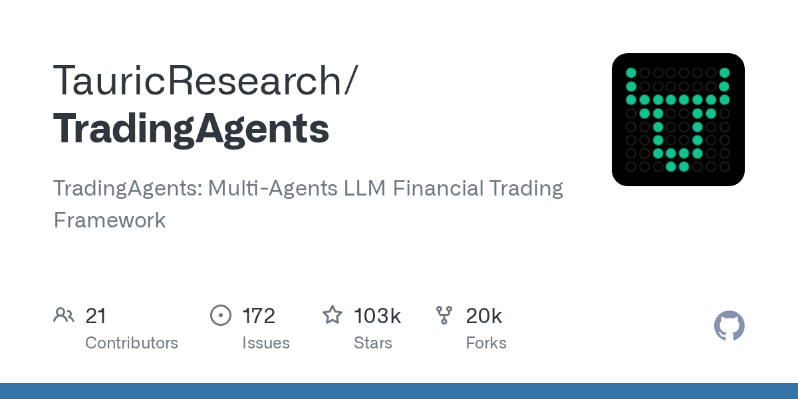

06 GitHub
TauricResearch/TradingAgents
분석·토론·주문 역할을 나눈 AI 트레이딩
★ 103,424이번 주 +718PythonApache-2.0 사내 사용 가능릴리스 v0.4.0 (08.31)최근 활동 09.07테스트 있음예제 없음AGENTS.md 없음

이 저장소는 금융 트레이딩 회사를 흉내 낸 멀티에이전트 프레임워크다. 한 모델이 모든 판단을 내리지 않는다. 재무, 뉴스, 심리, 기술 분석 같은 역할을 나눈 뒤 토론과 승인 절차를 거친다. 저장소는 연구 목적이라고 밝혔고, 투자 조언 용도는 아니라고 선을 그었다.
무엇을 하는 물건인가
TradingAgents는 여러 AI 역할이 협업해 매매 판단을 만드는 프레임워크다. 재무 분석가, 심리 분석가, 뉴스 분석가, 기술 분석가가 각자 의견을 낸다. 그 뒤 강세·약세 리서처가 토론하고, 트레이더와 포트폴리오 관리자가 최종 결정을 정리한다. 회의 참석자마다 맡은 안건이 다른 투자심의위원회를 화면 안에 옮긴 셈이다.
스펙과 도입 조건
- Python 3.12 환경 예시를 제공한다.
- 패키지 설치 방식과 Docker 실행 방식을 지원한다.
- OpenAI, Google, Anthropic, xAI, DeepSeek, Qwen, GLM, MiniMax, OpenRouter, Alpha Vantage 등 외부 API 키가 필요할 수 있다.
- Azure OpenAI와 AWS Bedrock도 지원한다.
- Ollama와 OpenAI 호환 서버를 써서 로컬 모델이나 사내 엔드포인트로 붙일 수 있다.
- 라이선스는 Apache-2.0이다.
- 최신 릴리스는 v0.4.0이며 2026년 들어 릴리스를 자주 냈다.
이럴 때 쓰면 좋다
- 리서치 조직이 같은 종목을 두고 재무·뉴스·심리 관점을 나눠 보고서를 초안으로 만들 때 유용하다.
- 해외 주식과 가상자산을 함께 보는 팀이 시장별 티커 규칙을 바꿔가며 같은 절차로 분석할 때 맞다.
- 투자 의사결정 로그를 남겨 나중에 왜 그런 판단이 나왔는지 복기하려는 실험 환경에 어울린다.
핵심 기능
- 재무, 심리, 뉴스, 기술 분석 역할을 나눈 에이전트 팀을 제공한다.
- 강세·약세 리서처의 구조화된 토론을 거쳐 트레이더 판단을 보강한다.
- 포트폴리오 관리자와 리스크 관리 단계에서 주문 제안을 승인하거나 반려한다.
대안 대비 차별점
이 도구는 단일 프롬프트로 종목 의견을 내는 구조와 다르다. 분석 역할, 토론 역할, 주문 승인 역할을 분리해 실제 조직의 검토 절차를 흉내 낸다. 모델 제공자 선택 폭도 넓다. OpenAI 계열만 묶지 않고 Bedrock, Azure OpenAI, Ollama, OpenAI 호환 서버까지 받는다. CLI에서 종목, 날짜, 모델 제공자, 연구 깊이를 고를 수 있어 실험 조건을 바꾸기 쉽다.
사내 도입 체크
- 외부 LLM API와 시세 데이터 API를 폭넓게 호출할 수 있다.
- 프롬프트와 분석 대상 종목 정보가 외부 서비스로 나갈 수 있어 반출 기준을 먼저 정해야 한다.
- 유지보수 주체는 TauricResearch 조직으로 보인다.
- 상용 투자 리서치 도구와 일부 겹치지만, 이 저장소는 연구용 프레임워크라 운영 책임 체계는 별도 검토가 필요하다.
주요 용어
에이전트(Agent): 정해진 역할과 작업 흐름에 따라 움직이는 AI 실행 단위 LLM(Large Language Model): 긴 문장을 이해하고 생성하는 대규모 언어 모델 CLI(Command Line Interface): 터미널에서 글자로 명령을 내리는 방식 체크포인트(Checkpoint): 실행 중간 상태를 저장해 이어서 돌리는 기능 Ollama(Ollama): 로컬에서 모델을 띄워 쓰는 실행 환경
원문 정보
제목: TauricResearch/TradingAgents
최근 활동: 2026.09.07